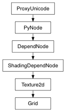

class counterpart of mel function grid
This command changes the size and spacing of lines on the ground plane displayed in the perspective and orthographic views. This command lets you reset the ground plane, change its size and grid line spacing, grid subdivisions and display options. In query mode, return type is based on queried flag.
Used to specify/query default values.
Derived from mel command maya.cmds.grid
Specify true to display the grid axes.
Derived from mel command maya.cmds.grid
Specify true to accent the grid axes by drawing them with a thicker line.
Derived from mel command maya.cmds.grid
Specify true to display the subdivision lines between grid lines.
Derived from mel command maya.cmds.grid
Specify true to display the grid lines.
Derived from mel command maya.cmds.grid
Specify true to display the grid line numeric labels in the orthographic views.
Derived from mel command maya.cmds.grid
Specify true to display the grid line numeric labels in the perspective view.
Derived from mel command maya.cmds.grid
Sets the number of subdivisions between major grid lines. The default is 5. If the spacing is 5 units, setting divisions to 5 will cause division lines to appear 1 unit apart.
Derived from mel command maya.cmds.grid
The position of the grid’s numeric labels in orthographic views. Valid values are axisand edge.
Derived from mel command maya.cmds.grid
The position of the grid’s numeric labels in perspective views. Valid values are axisand edge.
Derived from mel command maya.cmds.grid
Sets the size of the grid in linear units. The default is 12 units.
Derived from mel command maya.cmds.grid
Sets the spacing between major grid lines in linear units. The default is 5 units.
Derived from mel command maya.cmds.grid
This flag is obsolete and should not be used. Flag can have multiple arguments, passed either as a tuple or a list.
Derived from mel command maya.cmds.grid
Turns the ground plane display off in all windows, including orthographic windows. Default is true.
Derived from mel command maya.cmds.grid